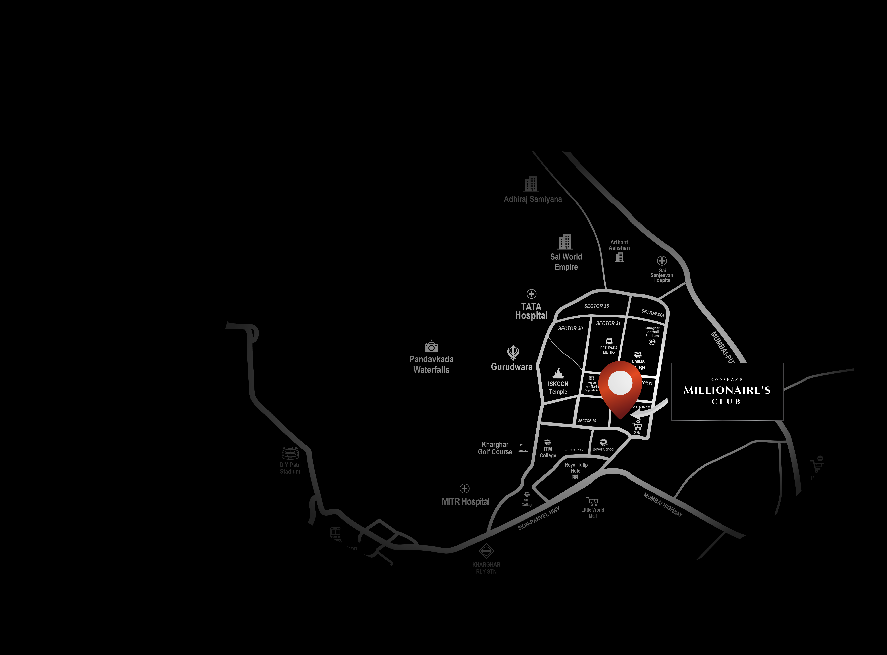

Amenities



When time is your
Greatest Luxury
-
Kharghar Metro:
2 Minutes -
Utsav Chowk:
5 Minutes -
Navi Mumbai Airport:
20 Minutes -
Atal Setu Bridge:
2 Minutes -
BKC 2:
20 Minutes

Get in Touch
Drop Us
A Line
- 121 street address
- +(123) 456 789 000
- company@email.com
-
Follow: